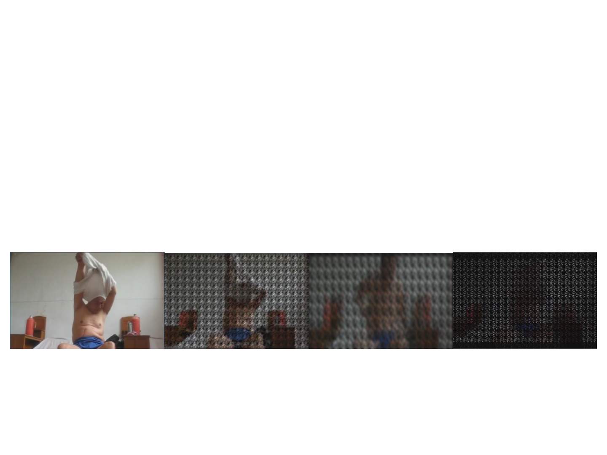
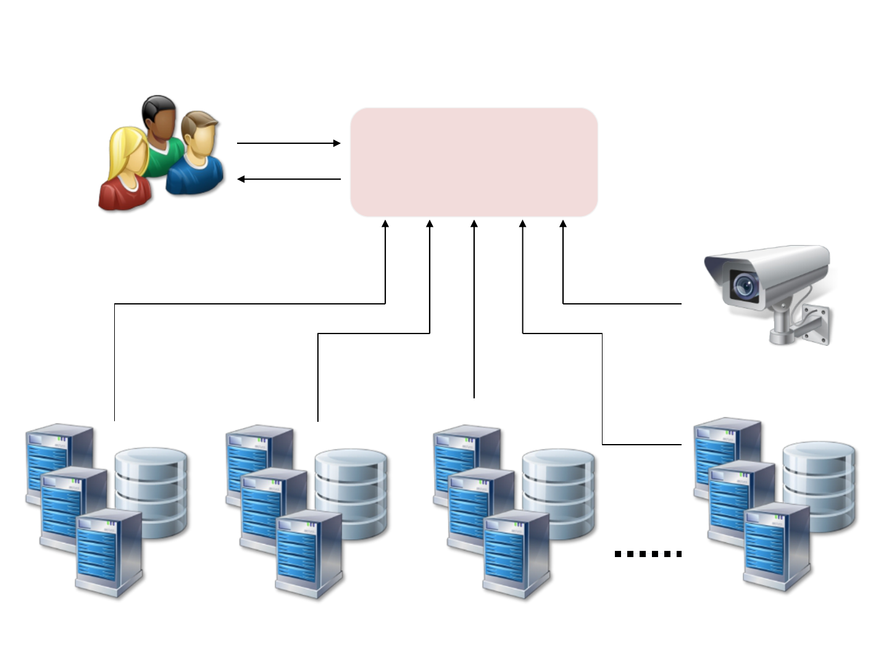

1
Smart Platform Infrastructure Research on
Integrative Technology (SPIRIT)
Nanyang Technological University (NTU)
Programme Overview
§ S$11 millions funding awarded by NRF to establish a Translational
R&D Centre for Smart Nation applications - the SPIRIT Centre
§ Perform Systems Research with the objective to design & develop a large-
scale, complex smart systems platform for translational R&D of
technologies relevant to smart nation applications
§ Platform will be a testbed for supporting rapid solutioning & fast
prototyping of smart nation applications
§ To be a one-stop shop with broad capabilities
2
R&D Focus
• Systems Research on Platform Architecture
– To support translational R&D on data science & video analytics
– To handle massive amount of data from diversified sensing sources via
heterogeneous network interfaces
– To meet stringent demand in response time of smart nation applications
– SDLC guided by Enterprise Architecture methodology
• Wireless communication research on IoT and sensor network
– Existing expertise and proven track records in wireless communication, sensor
networks, acoustics, and AI.
– Project-centric cooperation between centre and the public and private sectors
– Campus-Wide Test Bed: NTU’s Yunnan Garden campus will be transformed into a
real-life test bed.
Smart Surveillance Smart Mobility
Data Science, Video Analytics
AI / Machine & Deep Learning
Systems
Research
Network
Adaptor APIs
Sensor
Networks
Connected Devices
Wireless network

Critical Technologies & Drivers for Smart Nation
Smart Nation: Technology Perspective
Smart Nation/Cities is enabled by the widespread adoption of new technologies
such as:
• Sensors
• Internet of Things (IoT)
• Cloud computing
• Mobile technology and
• Big data analytics
• Cybersecurity
to develop intelligent systems in order to improve government operations,
support better living, create opportunities, and to support stronger and safer
communities.
Smart Nation/Cities is a systems engineering technology that aims to
disrupt and challenge traditional operations and decision-making
processes
Systems Research for Platform Architecture
Platform needs to handle massive amount of data from diversified
sensing sources via heterogeneous network interfaces
6
Wireless &
Data
Transport
Connected
Connected
Sensors
Sensors
(A/V & Env)
(A/V & Env)
Car Parks = 19
Major Junctions = 9
Bus Stops = 18
Traffic Lights = 2
Total RSU Counts
40 ~ 50 units
Campus-wide Test-bed
NTU-Singapore Judiciary Collaboration:
A.I. to Aid Courtroom Procedures
• Objective: Improve judicial efficiency through A.I. techniques
• Approach: R&D for an Intelligent Case Retrieval System
• Decision support tools for the judges and legal professionals
• Develop advanced machine learning algorithms, intelligent information
retrieval and natural language processing techniques
• Support efficient retrieval of precedent cases, perform automatic
summarization and legal reasoning
ICRS: Decision Support through AI
Intelligence comes from:
• Natural language processing
• Topic Modelling
• Intelligent Search/Retrieval
• Automated Summarization
NTU-MITRE Smart Nation Collaboration:
Worker Health and Safety
• Objective: Improve construction site safety
through predictive analytics
• Approach:
• Fuse diverse data sources from low-cost smart
sensors (e.g. visual, audio, environmental/health
sensing) to detect “near-miss” events between
human and machine or machine to machine on
construction sites.
• Develop advanced machine learning algorithms to
identify patterns and generate predictive analytics.
• Generate data visualization dashboards which allow
decision makers to leverage these new data sources
to improve safety planning and mitigate risks.

Compressive Sensing
• Video Transmission for Elderly Care
– Achieves 2x – 40x compression with Tunable Quality.
– Lightweight design, suitable for sensor nodes.
• Software/Hardware Prototype available.
• Smooth plugin to existing systems.
original 45%
90%
70%
Technology: “Secure and Lightweight Compressive Sensing using Stream Cipher”,
Accepted for publication in IEEE Transactions on Circuits and Systems II.
12
Cybersecurity Big Data Analytics
Network
Access Log
Cross-domain Data
Analytics
Malware
Payload
Attack
Payload
Cyber Security
Analyst
13
• Cyber fusion: Linking cyber security & physical security systems
– Leads gathered through Digital Forensics can be followed up by physical security
systems E.g.
– APT found to be originated from malware residing in a computer
– Malware could have been introduced by contaminated thumb drive
– Infected USB drive could have been placed by Attacker(s)
– Physical security system could help identify the culprit
• Video analytics
• Image analytics
• Biometric recognition
Cyber Fusion
This project was conducted in collaboration with the Global Safety
Division of NEC Corp.

14
Linking Cyber Security & Physical Security
Network
Access Log
Cross-domain Data
Analytics
Malware
Payload
Attack
Payload
GIS, Blogs,
etc
Cyber Investigation
Specialists
Surveillance video
Thank You!
15